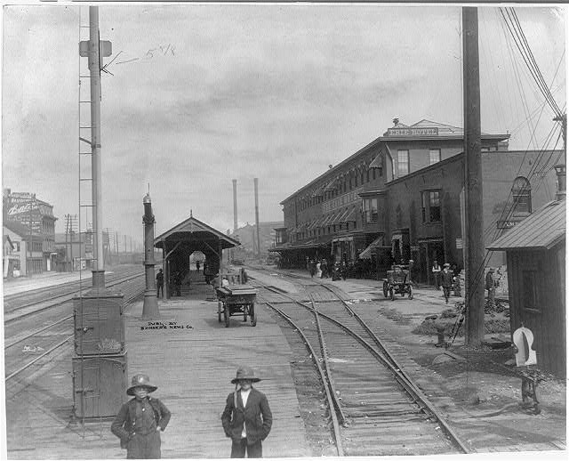
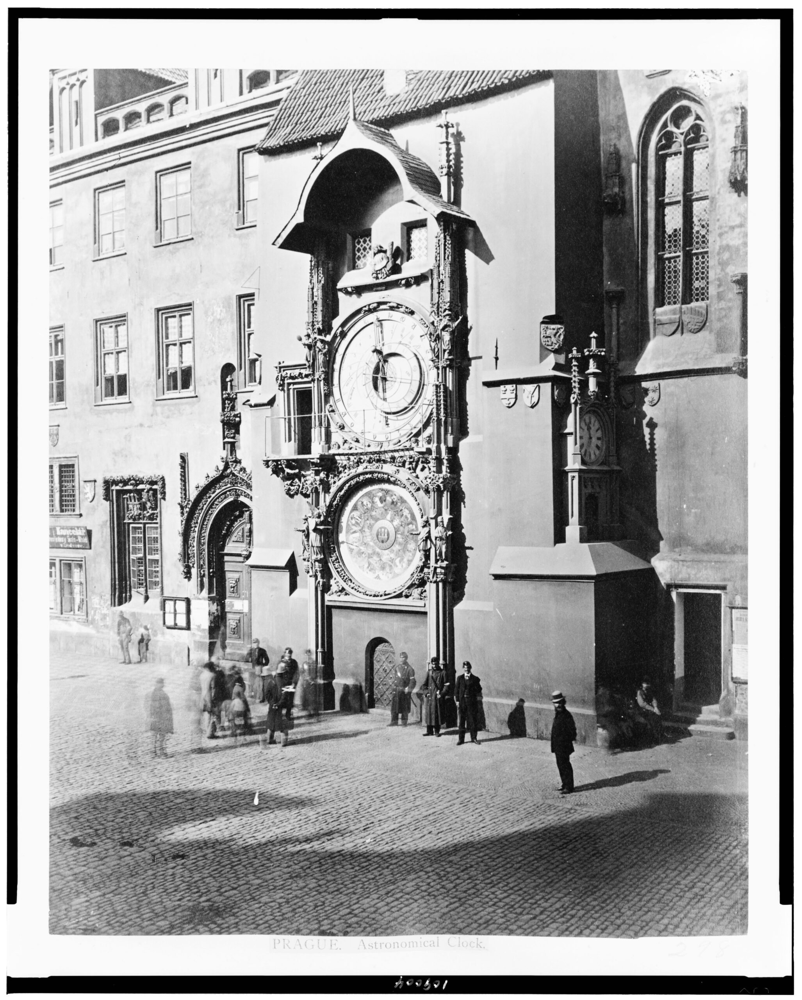
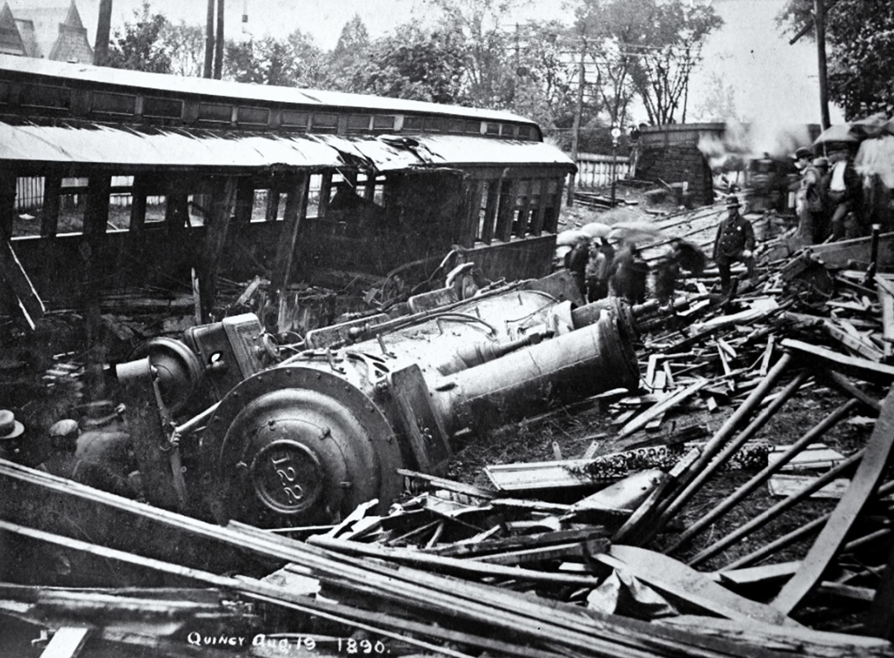
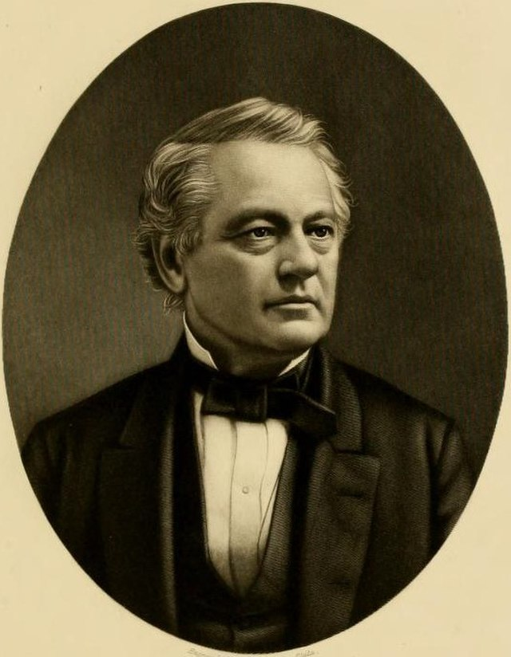
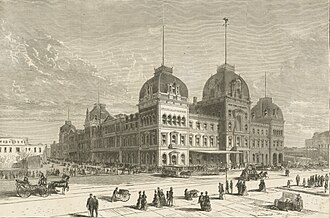
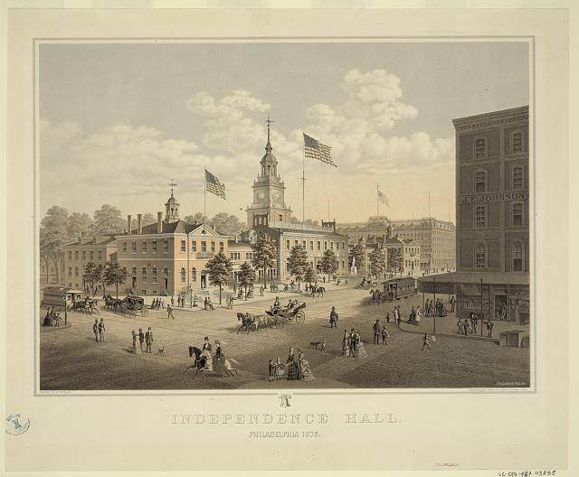
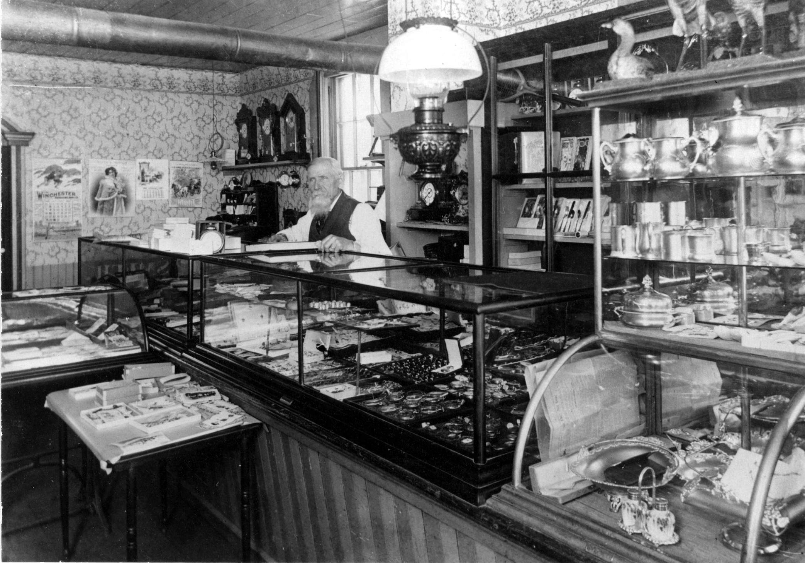
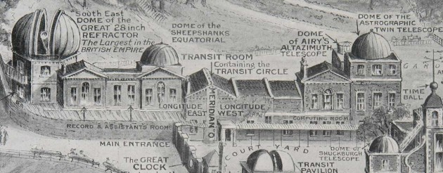
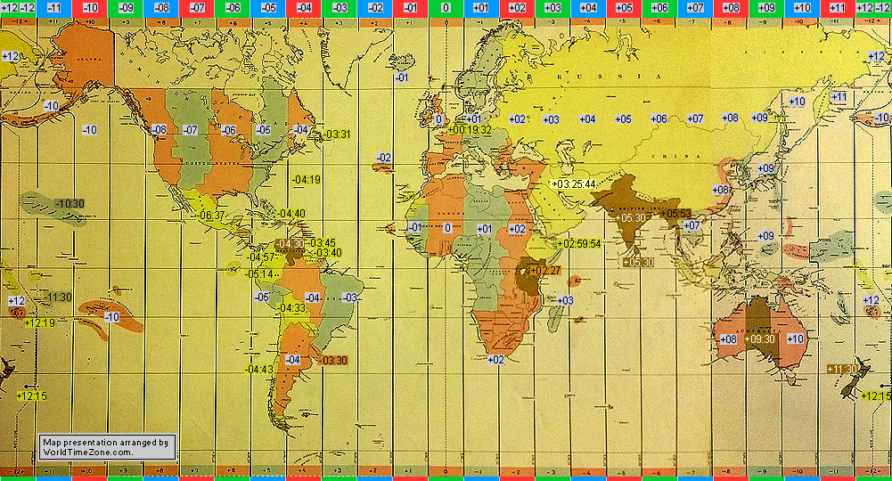

Before the Clock Was King

Most people today don't think twice about what time it is. You check your phone and it matches every clock around you. But that wasn't always how things worked. Before the 1880s, every town in America kept its own time based on the sun. A city thirty miles east had a different "noon" than the city next to it. That might sound strange, but it made total sense back then, because nobody needed to coordinate with people that far away.
That changed when railroads started crossing the continent. Suddenly you had trains running through dozens of towns, all with different clocks, and nobody could agree on a schedule. This is the story of how that problem got solved, and who actually solved it. The answer is not who most people would guess.
Most people assume the government created standard time zones. They didn't. Private railroad companies did, in 1883, because they had no other choice. Congress didn't make it official for another 35 years.
A Nation of a Thousand Noons
Before railroads, every American town kept what's called local mean solar time. Basically, noon happened when the sun was directly overhead. That's it. Since the Earth rotates 360 degrees every 24 hours, every degree of longitude you move east or west changes the time by four minutes. So cities that weren't even that far apart had completely different clocks.
To put that in real numbers: at noon in Chicago, it was already 12:07 in Indianapolis, but only 11:50 in St. Louis, and 11:27 in Omaha. None of those cities were wrong. They were all just tracking their own sun. When people traveled by horse or boat this wasn't a big deal, since you moved slowly enough to adjust. Trains changed that completely.
A train could get you from New York to Chicago in under two days. You weren't slowly drifting through time zones anymore, you were cutting through them at full speed. And when you arrived at a station, the clock on the wall might say something completely different than the one you left behind. That was a real problem.

"The confusion of time standards was the source of unceasing annoyance and trouble."
New York Herald, 1883
Iron Rails, Impossible Schedules

It wasn't just a scheduling headache either. It was genuinely dangerous. In August 1853, two trains collided head-on near Providence, Rhode Island. Part of the reason was that the crews were working off different clocks. Fourteen people died. That kind of accident gave railroad executives a real reason to want a fix, beyond just keeping their timetables straight.
Congress wasn't going to help. They looked at proposals for national standard time in 1809, 1870, and 1872 and said no each time. Politicians didn't want to get involved in something that felt like telling people what time the sun was at. So it was left to the railroads to figure out on their own.
William F. Allen and the Plan That Changed Everything

People had been trying to solve this for a while. A schoolmaster named Charles F. Dowd proposed a national time-zone system back in 1863. Nobody listened. Scientists like Cleveland Abbe and Canadian engineer Sandford Fleming made similar arguments through the 1870s. None of it went anywhere.
The person who actually made it happen was William F. Allen, and what's interesting about him is that he wasn't a scientist or a government official. He ran a railroad scheduling guide called the Traveler's Official Railway Guide and served as secretary of the General Time Convention. He was basically a railroad industry insider, which is probably exactly why he was the one who could pull it off.
In 1881 the railroads asked Allen to come up with a real plan. He divided the U.S. and Canada into five zones: Intercolonial, Eastern, Central, Mountain, and Pacific. Each one was centered on a meridian 15 degrees of longitude apart, which works out to exactly one hour difference between zones. Importantly, he drew the boundaries to line up with real cities and station locations rather than just straight lines on a map, which made it actually workable.
Allen's Strategy
Allen knew he needed buy-in before he could push the plan through. He gathered feedback from engineers and officials across the industry through his Railway Guide. He also pushed the railroads to move fast, warning that if they waited too long, the government might step in with something worse.
The October Convention
On October 11, 1883, railroad executives met at the Grand Pacific Hotel in Chicago. Allen presented the plan. They voted yes. The date was set: Sunday, November 18, 1883. At noon, a telegraph signal from the Naval Observatory in Washington would go out, and every railroad clock in the country would reset at the same moment.
The four standard time zones the railroads put in place in 1883. Each zone centered on a meridian set 15 degrees, or one hour, apart.


"At about a quarter to 12 o'clock, the great clock stopped... Nine minutes and thirty-two seconds later, it was reset to noon, as were clocks in other railroad stations and jewelers' shop windows. 'The general greeting on the street yesterday was, Have you the new time?'"
The "Day of Two Noons" name came from something genuinely weird that happened. In the eastern parts of each time zone, local solar noon arrived first, just like always. The bells rang, the clocks struck twelve. Then a few minutes later, the telegraph signal came in and the clocks had to be set back. Noon happened again. Some cities literally had noon twice in one day.
In New York, the bells at St. Paul's Chapel rang twelve times, then rang again about four minutes later. Pennsylvania Railroad workers swapped out signs that said "Philadelphia Time" for signs that said "Standard Time." The New York Central had already reset its clocks earlier that morning to get ahead of any confusion.
"Petersburg, Va., Nov. 18. At noon today the city clock and the time pieces in different railroad offices here were set by the standard time received from Washington. Hereafter all trains from this city will run by the standard time, under the new schedule."
"The Sun will be requested to rise and set by railroad time. People will have to marry by railroad time, and die by railroad time. Ministers will have to preach by railroad time; banks will open and close by railroad time."
The Indianapolis Sentinel, November 17, 1883
There was one awkward moment. Attorney General Benjamin Brewster said federal clocks couldn't be changed without an act of Congress. The superintendent of the Naval Observatory ignored him and synchronized the federal clocks anyway. The government ended up just going along with what the railroads had already done.
A Nation Divided Over the Clock
Not everyone was on board. Reaction to the new system was pretty mixed across the country, and it's interesting to look at who pushed back and why.
Acceptance: The Practical Majority
Most people in railroad towns just went along with it. The railroads were too important to their daily lives to fight over a clock. Missing a train meant missing a market, losing a sale, or failing to get somewhere you needed to be. One shared clock was easier for everyone.
Jewelers were actually a big part of how this spread. They kept the official time in their shop windows, and people would come by to set their pocket watches. In Burlington, Iowa, local jewelers wrote to the Smithsonian to get the exact formula for Central Standard Time, then published it in the newspaper so the whole town could adjust.

Resistance: "Contrary to Nature"
Others were angry. Some people said they were being "robbed of their daylight," which is a pretty reasonable way to feel when a private company decides to move your noon. Nobody had asked them. There was no vote. Railroad executives in distant cities had just decided what time it was going to be in your town.
Detroit refused to go along until 1900, which created 17 years of confusion for anyone crossing between Detroit and Windsor, Ontario. A lot of smaller towns kept two times going at once: "railroad time" at the depot and "God's time" everywhere else. It took years for things to fully settle.
Indianapolis fought the change hard enough that its daily Sentinel argued in print, the night before the switch, that citizens would have to "eat, sleep, work, and marry by railroad time." The point was clear: private companies were overriding the natural order, and nobody had voted for it.
Within a year of November 18, 1883, most American cities had adopted standard railroad time regardless.
A Question of Power
I think the resistance makes a lot of sense when you step back. This wasn't just about clocks. Railroad companies in the Gilded Age were some of the most powerful private institutions the country had ever seen. They already controlled transportation, prices, and trade routes. Now they were deciding what time it was. That's a lot of power for a private company to hold, and a lot of people noticed.
The "Day of Two Noons" is really a story about who gets to decide how everyday life is organized, and what happens when the answer is a corporation instead of a government or a community.
From Railroad Time to Federal Law, and the World
The pushback didn't last long. Standard time was just too useful. Businesses, schools, and governments all fell in line within a few years. The old system of hundreds of local times faded out, and most people stopped thinking about it.
The federal government, which had done nothing to create any of this, finally got around to making it official law in 1918 with the Standard Time Act. That's 35 years after the railroads had already solved the problem on their own. The same act introduced Daylight Saving Time, which turned out to be incredibly controversial. Congress repealed it the very next year, though it kept coming back in different forms throughout the 20th century.


It Went Global Too
What's also interesting is that the same year, 1884, the International Meridian Conference met in Washington D.C. and established Greenwich, England as the global Prime Meridian. The 24-zone system that covers the whole world today uses the same basic logic the American railroads came up with for their four zones. Something that started as a scheduling fix for train companies ended up becoming the global standard for how every country on Earth keeps time.
Why This Still Matters
Before 1883, time was something that belonged to your town and the sun above it. After 1883, it belonged to a system. That shift is so complete today that it's hard to even imagine the alternative. Every synchronized schedule, every time zone on your phone, every international meeting that has to coordinate across countries all traces back to what a group of railroad executives voted on in a Chicago hotel in October 1883.
What I found most surprising researching this topic is that it wasn't the government or scientists who made this happen. It was a private industry solving its own problem, and the rest of the world just followed along.
"Before 1883, time was local, personal, and connected to nature. Afterward, it became industrial, mechanical, and universal."
Today in Railroad History
From Local Sun to Standard Clock
The key events that transformed American timekeeping unfolded over two decades of railroad growth and government inaction.
Two trains collide head-on, partly because crews were working from different local times. Fourteen passengers die. The disaster makes the safety stakes of time confusion plain.
Congress funds the transcontinental railroad. The resulting burst of rail mileage makes the time problem acute within two decades.
Schoolmaster Charles F. Dowd publishes the first American proposal for a national railroad time zone system. No railroad adopts it.
Congress reviews proposals for national standard time in 1870 and 1872 and rejects both. The problem stays with private industry.
The General Time Convention asks William F. Allen, editor of the Traveler's Official Railway Guide, to build a workable time-zone plan for the railroads.
Railroad executives vote at the General Time Convention in Chicago to adopt Allen's plan. They set November 18, 1883 as the date for the switch.
At noon, synchronized telegraph signals reset railroad clocks across the continent to four standard time zones: Eastern, Central, Mountain, and Pacific. Some cities experience noon twice.
In Washington, D.C., an international conference names Greenwich as the global Prime Meridian, extending the same zone logic across the whole planet.
Detroit abandons local solar time and adopts standard time, 17 years after the railroads made the switch.
Congress writes railroad time zones into federal law, 35 years after the railroads acted on their own. The act also introduces Daylight Saving Time for the first time in U.S. history.
Academic and Primary Sources
- Library of Congress, Business Reference Services. "The Day of Two Noons: This Month in Business History." Library of Congress Research Guides. guides.loc.gov
- National Museum of American History, Smithsonian Institution. "Time Zones: Synchronizing." On Time exhibition. americanhistory.si.edu
- Library of Congress Law Library. "Whose Time is it Anyway? A Brief History of Standardized Time Zones in the United States." In Custodia Legis blog, November 2024. blogs.loc.gov
- Bureau of Transportation Statistics, U.S. Department of Transportation. "History of Time Zones and Daylight Saving Time." bts.gov
- Gordon, John Steele. "Standard Time: We All Live By What Happened on November 18, 1883." American Heritage, July/August 2001, pp. 22–23.
- New York Times. "Day of Two Noons" coverage (primary source), November 18, 1883. Reprinted at History Matters, George Mason University.
- Iowa PBS / Iowa Pathways. "What Time is It? Railroads Bring Standard Time." Adapted from Bonney, Margaret Atherton (ed.), The Goldfinch, vol. 5, no. 2, November 1983. iowapbs.org
- Trains magazine. "How Railroads Standardized Time in the U.S." trains.com
- Ramirez, Ainissa. "What Happened the Day the U.S. Adopted Standardized Time Zones." TIME, November 18, 2019. time.com
- Union Pacific Railroad Museum. "Time is of the Essence… or the Railroad?" Curator's Corner. uprrmuseum.org